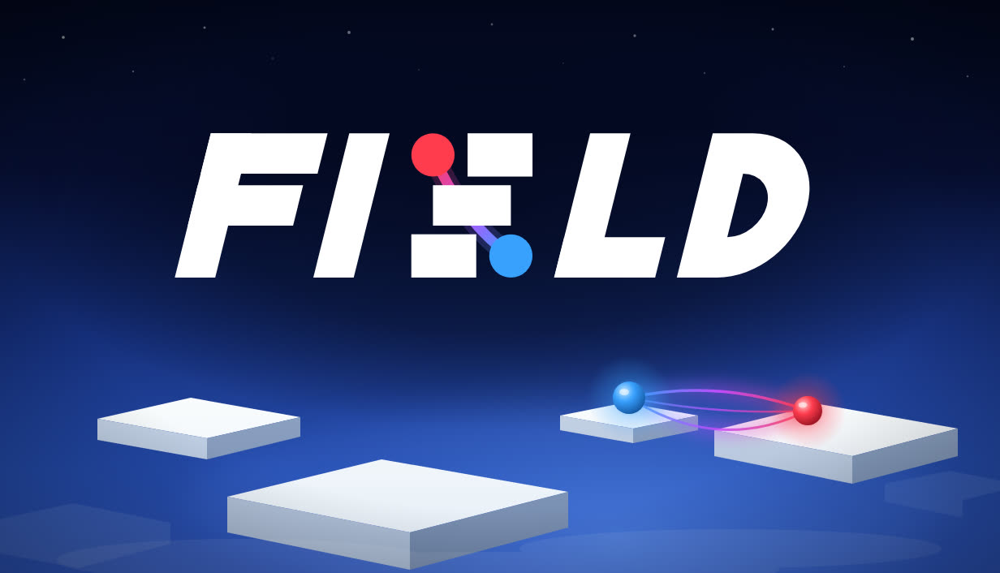
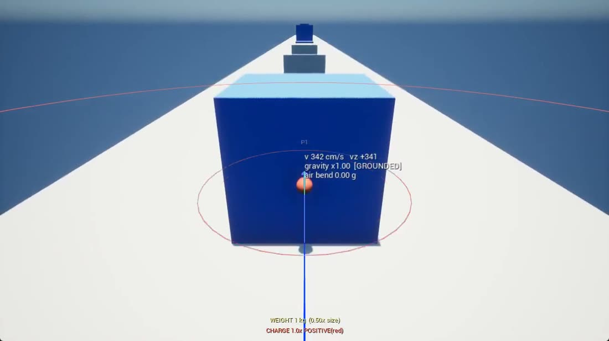
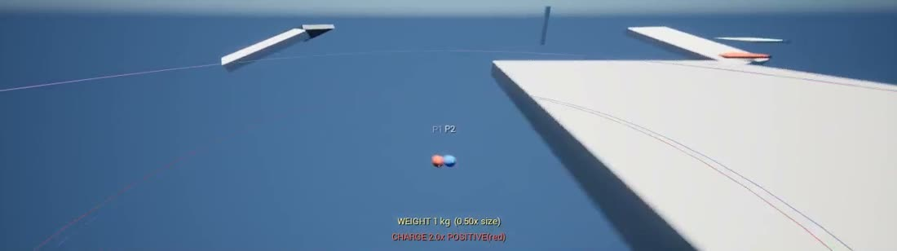
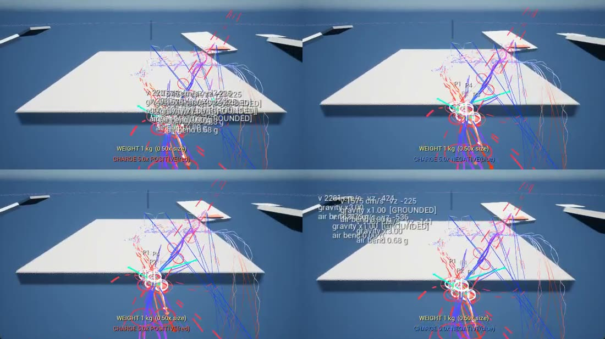
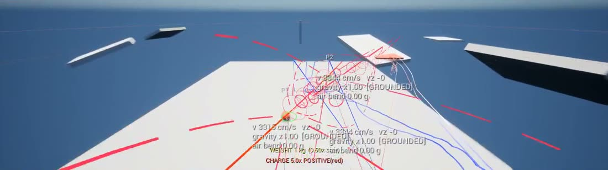
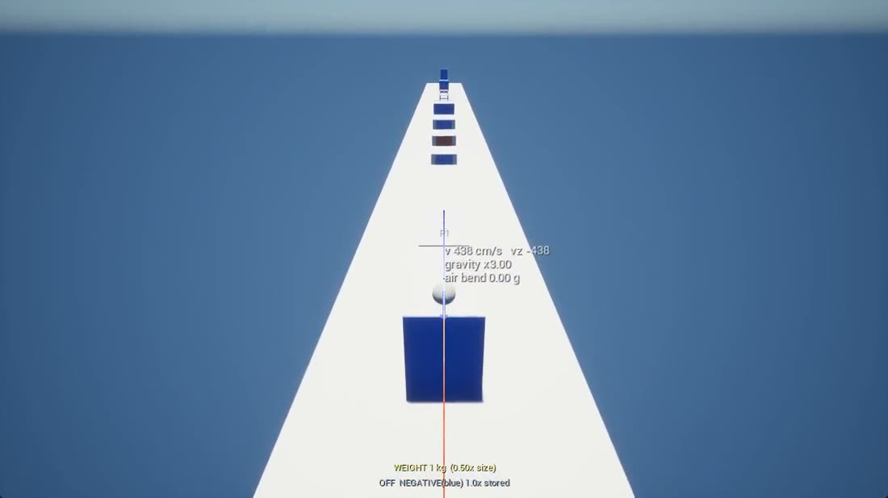
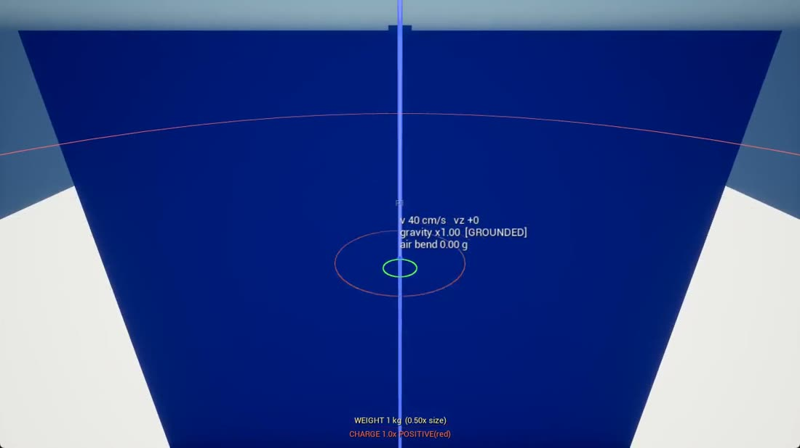

Co-op Rage Platformer • 1–4 Players • Unreal Engine 5 • In Development
Climb one enormous tower. Everybody reaches the top, or nobody finishes.
You have been chained to your friends. You have been roped, bolted and boxed in with them. Here, what holds you together is a magnetic field — and a field pushes as hard as it pulls.

How it works
You are a ball carrying a magnetic charge, and that charge is what you control. Flip your pole and an opposite wall clamps you to it — the wall becomes your floor. Match the wall and it throws you off. Turn the strength up and you reach further, so you can grab a wall across a gap. Turn it down and you tear yourself off the one holding you.
Red is positive. Blue is negative. Grey is neutral. You read the level by looking at it. There is a jump, and a double jump with real air steering — but it's a hop. The magnet is how you climb. Opposites attract and likes repel: the magnetic dipole–dipole interaction, running as the thing you actually play.
Magnetised to a surface. You go up, and you go up slowly.
Cover far more ground in one move. Nothing is holding you.
That choice is live every second, and one mistake in the physics can ruin a run — or save it. Solo, the risk is entirely your own. With other people, communication is everything, because one player's mistake spoils it for all of you. What comes out of that is skill that ends up feeling like luck — and it feels fair, because it is only physics. You own the mistakes.



The loop
The rage loop is established. It's proven, it's fun, and it's great in co-op. We didn't invent it — what we brought is the physics. More players is not more help: it's more chaos, and that's the difficulty dial. There are no checkpoints. You fall, and the height you lose is the punishment — all of it.
The rage platformer. No checkpoints, no respawn.
Playable todayThe world is only solid where the team is. Drift apart and it stops being there.
Built — first playtest aheadThe gentler one. A fall returns you instead of costing you the climb.
Specified, not yet builtWatch
There is no Steam page for F.I.E.L.D. yet. When it exists, a “Wishlist on Steam” button goes here, matching the one on the Hard Boiled section of the home page. Until then this space stays empty rather than linking somewhere that isn't there.
Where it actually is
It is a prototype, and the world is whitebox. White boxes, a blue sky, no art pass. Every screenshot on this page is a real frame from the current build, debug lines and all. The mechanics, the netcode and the first pass of audio and VFX are done; the tower is being built now.
The simple look is on purpose. A clean, readable style is the right one for a game whose subject is invisible forces made visible, and it's cheap — which is what lets the effort go into the game rather than an art pipeline.



Get in touch
It's being built in public. The Discord is where the work-in-progress goes first.